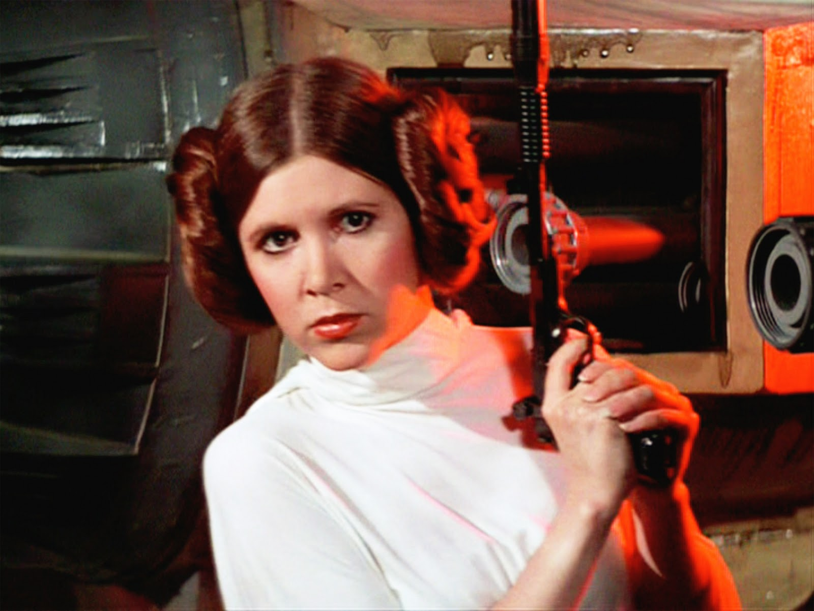
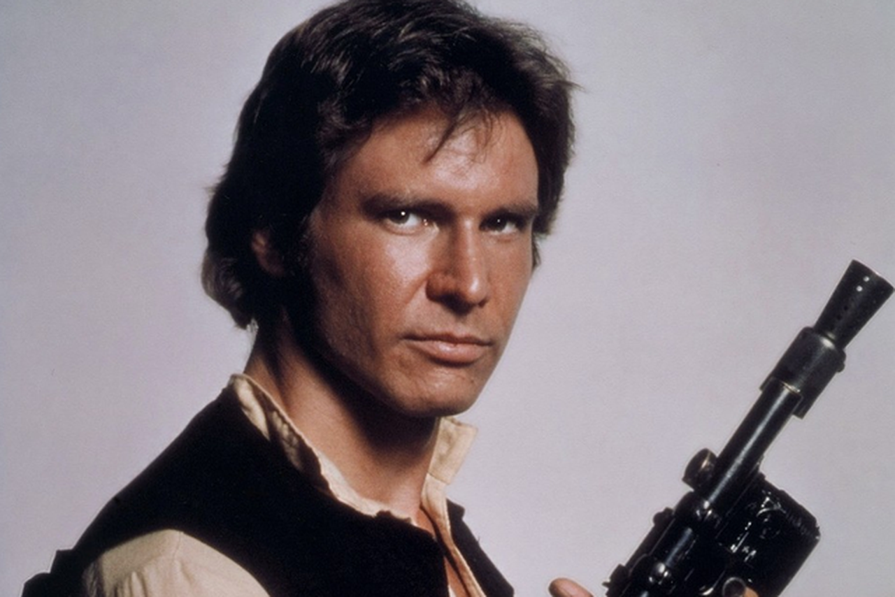

Personajes principales

Leia Organa
La Princesa Leia Organa de Alderaan es un personaje de ficción de la saga Star Wars. Es hija de la senadora Padmé Amidala y del Caballero Jedi Anakin Skywalker, hermana melliza de Luke Skywalker y esposa de Han Solo

Luke Skywalker
Luke Skywalker es un personaje ficticio y el protagonista de la trilogía original de la saga de ciencia ficción Star Wars. Procedente de la colonia de asteroides de Polis Massa, es el único hijo varón de Anakin Skywalker y la senadora Padmé Amidala.

Han Solo
Han Solo es un personaje de ficción y uno de los protagonistas de la saga Star Wars. Fue intepretado por Harrison Ford en los episodios IV: Una nueva esperanza, V: El Imperio contraataca, VI: El retorno del jedi y VII: El despertar de la fuerza.